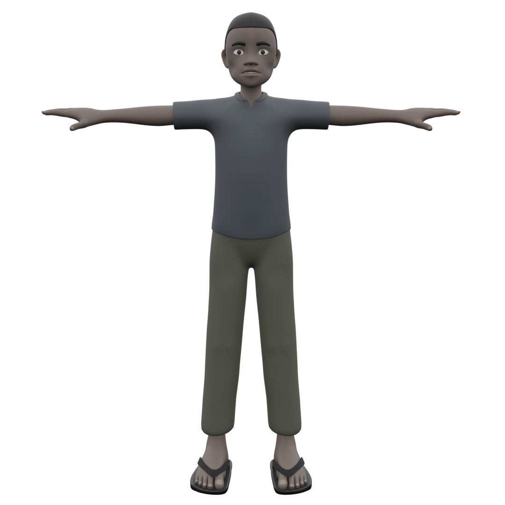
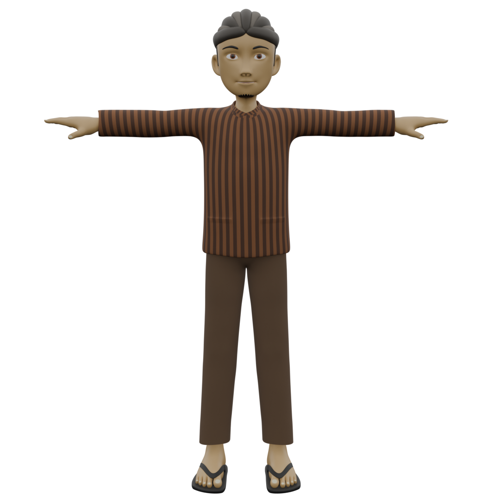
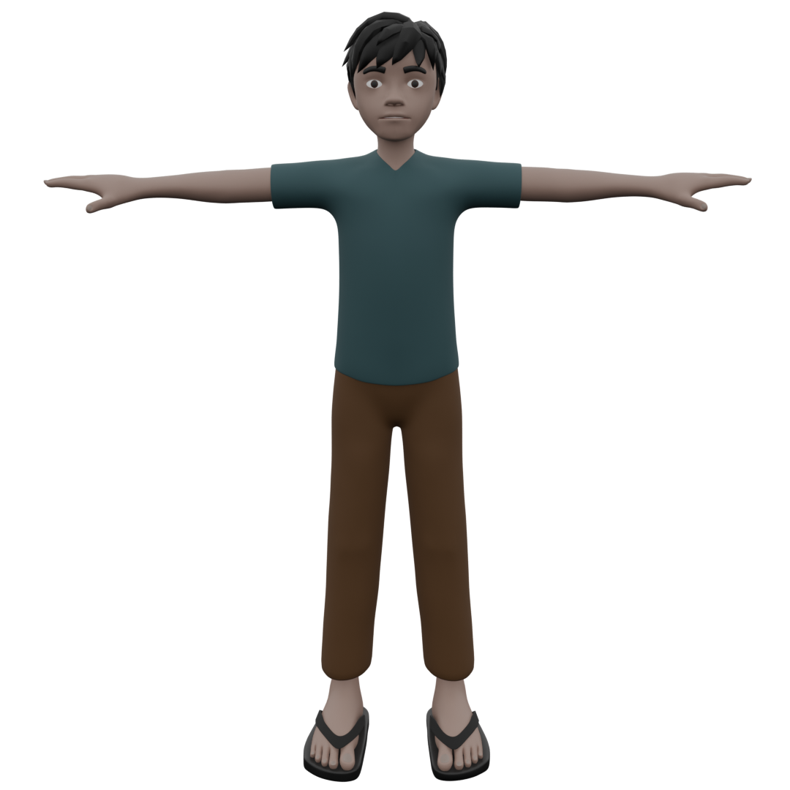

Aset Karakter
Daftar model karakter manusia dan hewan beserta deskripsi tugas pengerjaannya.
Datuk Katumanggungan
Tokoh leluhur legendaris Minangkabau & penyusun sistem adat Lareh Koto Piliang.
Datuk Parpatiah Nan Sabatang
Model 3D karakter berkonsep stylized low-poly lengkap dengan pakaian adat khas.
Si'Ai
Aset figur masyarakat lokal Minangkabau dengan pakaian kasual sehari-hari.

Sutan Malin
Variasi penduduk lokal dengan penyesuaian warna busana & aksesoris tradisional.

Nahkoda
Pemimpin kapal perahu besar dengan pakaian tangguh berkarakter maritim.

Pemimpin Pasukan Pendatang
Karakter pemimpin asing dengan detail baju zirah dan siluet tegas.

Tentara Pasukan Pendatang
Aset prajurit modular untuk kebutuhan formasi pertempuran.
Kerbau Besar
Model 3D kerbau dengan struktur anatomi teroptimasi.

Kerbau Kecil
Anak kerbau dalam adegan adu kerbau kunci dengan rigging khusus.

Mak Gaek
NPC tetua kampung lansia dengan gestur tubuh khas dan pakaian tradisional.

Sutan Pamenan
Pemuda kampung berkarakter tangguh khas Minangkabau, topologi efisien.

Syamsiur
Karakter pemuda dengan topologi teroptimasi untuk variasi gerakan.
Datuk Katumanggungan
Tokoh leluhur legendaris Minangkabau & penyusun sistem adat Lareh Koto Piliang. Model karakter dibuat dengan pendekatan busana serta atribut tradisional secara detail.
Datuk Parpatiah Nan Sabatang
Model 3D karakter Datuk Parpatiah Nan Sabatang berkonsep stylized low-poly. Aset tokoh adat Minangkabau ini mengenakan pakaian adat khas lengkap dengan ornamen emas, siap digunakan untuk narasi sejarah atau diorama interaktif.
Si'Ai
Model 3D karakter Si'Ai berkonsep stylized low-poly. Aset figur masyarakat lokal Minangkabau dengan pakaian kasual sehari-hari, siap digunakan untuk menghidupkan suasana pemukiman pedesaan atau diorama interaktif.